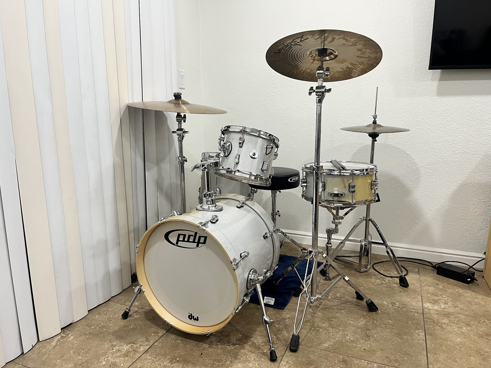

My Interests
__________________________________________
I have plenty of interests that I won't include here to keep the list fairly basic. I'll break down my main interests below, with a further and more in depth overview of my passion for drumming underneath.
- Drumming
- I started drumming at the age of 13
- I was in my school's drumline for 2 years
- I went on to teach myself and transfer my skills to my drum kit
- I currently play with a group of friends in a cover band and have a ton of fun doing it
- Playing the Guitar
- During the COVID 19 pandemic I decided to pick up an old guitar and start learning
- My skills are definitely a work in progress but I love playing
- I currently have a beautiful torquoise Squier Stratocaster
- Video Games
- I grew up playing Minecraft with my brother and I love it!
- Halo 4 and COD Zombies are also games that I typically play with my brothers
- The Pokemon games have a special place in my heart
- Reading
- Harry Potter
- Percy Jackson
- Currently reading: Mistborn
Current Drumming Setup
__________________________________________
Right now I currently play a PDP New Yorker kit which features a 4 piece shell pack (snare, kick, and two toms). My hihats are Zildjian New Beats coupled with a Zildjian S Series Medium Thin Crash and a Paiste PST 5 Ride Cymbal.
Inspiration
__________________________________________
Many people have inspired my journey in drumming but a few people have continually lit the fire that keeps my passion going. Below is a video of Larnell Lewis, the drummer for a band called Snarky Puppy. He is an incredibly talented musician and when I first saw this video I couldn't believe it. It's still a huge inspiration to me even after watching it dozens of times!
Music Charts
__________________________________________
With music being such a huge part of my life I love analyzing and learning who the most popular artists are and what the most popular songs are, take a look at this awesome breakdown of 2023!

Back to Top